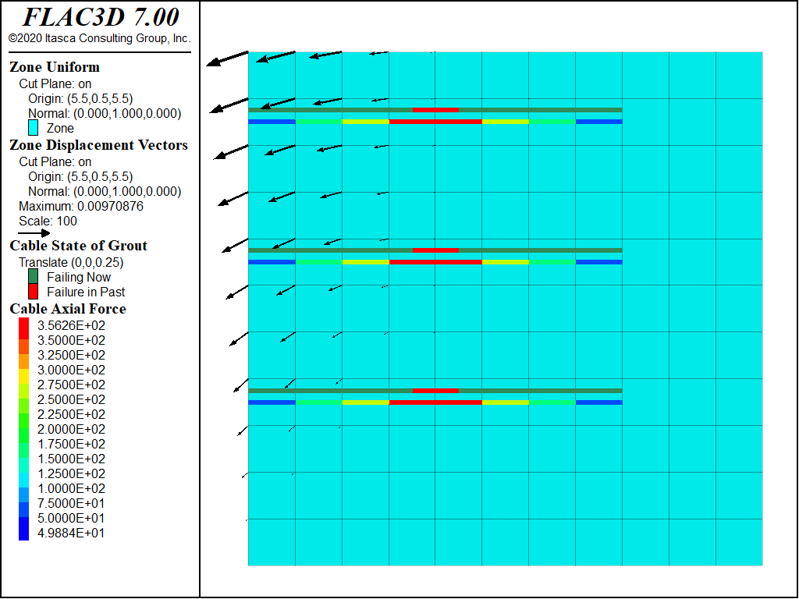
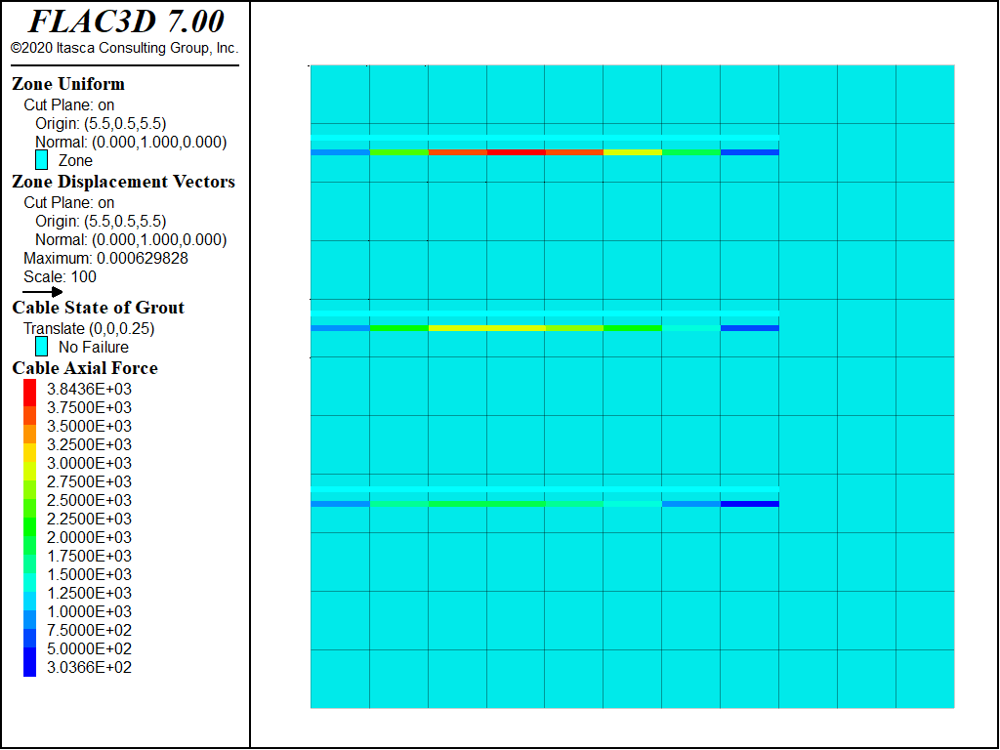

土钉支护
问题描述
注意
要在 FLAC3D 中查看此工程，请使用菜单命令 。选择“Structure/Cable/SoilNailing”，再选择“SoilNailing.f3prj”即可加载。所使用的主数据文件（main data files）在本示例末尾给出。其余数据文件可在该工程中找到。
本示例展示锚索单元模拟土钉等材料在加筋路堤施工中所提供支护的能力。本示例中，在竖直路堤的不同高度安装三根土钉。考察两种情形：（1）假定土钉与土体之间仅有黏聚阻力；（2）同时考虑黏聚阻力和摩擦阻力。
在第一种情形中，土钉不足以支护路堤。图 1（Figure 1） 给出了锚索中的轴力，表明所有节点的注浆体均已达到滑移条件。
在第二种情形中，通过计入土钉/土体交界面上 25° 的摩擦阻力，土钉足以使路堤稳定。图 2（Figure 2） 绘出了该情形下锚索中的轴力。请注意，由于摩擦阻力，现在可以发展出明显更高的轴力。


图 1：土/钉交界面上仅有黏聚强度时土钉中的轴力（路堤正在失稳）。


图 2：土/钉交界面上同时具有摩擦和黏聚强度时土钉中的轴力（路堤稳定）。
数据文件
SoilNailing.dat
model new
model large-strain off
model title "Soil nailing (using cables)"
; 创建网格单元
zone create brick size 11 1 11
zone face skin ; 命名模型边界
; 分配本构模型和属性
zone cmodel assign mohr-coulomb
zone property bulk 5e9 shear 1e9 cohesion 4e4 friction 30 density 2000
; 边界条件
zone face apply velocity-normal 0 range group 'East' or 'West'
zone face apply velocity-normal 0 range group 'North' or 'South'
zone face apply velocity (0,0,0) range group 'Bottom'
; 初始条件
model gravity 10
zone initialize-stresses ratio 0.6,0.4
; 求解至初始平衡（应很快完成）
model solve ratio-local 1e-4
; 释放左侧边界条件
zone face apply-remove range group 'West'
; 创建锚索并赋予参数
struct cable create by-ray (0,0.5,3.5) (1,0,0) 8 segments=8
struct cable create by-ray (0,0.5,6.5) (1,0,0) 8 segments=8
struct cable create by-ray (0,0.5,9.5) (1,0,0) 8 segments=8
struct cable property cross-sectional-area=5.02e-3 young=200e9 ...
yield-tension=1e10 grout-stiffness=7e6 grout-cohesion=1e2
model save 'Start'
; 循环至平衡 - 预期会破坏，因此也限制循环次数
model solve ratio-local 1e-4 cycles 5000
model save 'LowFriction'
;
; 以更大的摩擦角重新运行
model restore 'Start'
struct cable property grout-perimeter=0.314 grout-friction=25
model solve ratio-local 1e-4
model save 'HighFriction'
| 这些内容对您有帮助吗？… | FLAC3D © 2019, Itasca | 原文更新于 2020 年 10 月 8 日 |
| 版权与免责声明 | ||